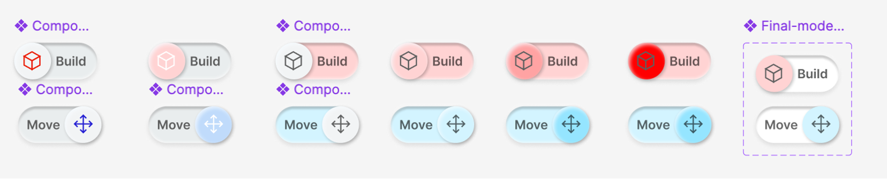

10/24 - 12/24 (2 months)
UX Design, Marketting Design
2 Project Managers, 2 Product Designers, 3 Developers
I worked as a product designer in the team, where I was responsible for driving the ideation process by researching user needs, generating innovative concepts, and defining user-centered solutions. I created detailed prototypes to visualize and test our ideas, ensuring a seamless and intuitive user experience. Additionally, I contributed to the development of marketing materials, including posters and banners, to effectively communicate the value of our product to stakeholders and target audiences. My role also involved collaborating with cross-functional teams to align design goals with technical and business objectives.

As 3D models continue to grow in popularity, the process of creating them remains complex, requiring significant expertise and specialized skills. Additionally, many 3D construction software platforms, such as Blender and SketchUp, lack support for real-time collaborative editing. Our team aims to make 3D construction more accessible and enjoyable for users of all skill levels, enabling them to collaborate seamlessly and create in real time.
1. How might we make 3D construction easy and accessible for users of all skill levels?
2. How might we enable users to collaborate seamlessly and create in real time?
Our target users are students and young adults who are beginners in 3D creation or just curious about 3D construction process. We conducted interviews with the potential users and created the persona.

Since this is a construction tool designed to give users ample space for creativity, we aim to adhere to the principle of minimalism by including only essential buttons and features in the design.
Additionally, we strive to ensure users can interact seamlessly with the interface using either a keyboard or a mouse, independently or in combination.


The welcome page only requires a username, as all users collaborate on the same project, eliminating the need for individual user accounts.
To reinforce our product identity, placing cubes to build 3D objects, and align with our brand, the design incorporates blue and pink cubes, reflecting the color palette of our organization’s logo.

The main page consists of five key elements:
1. Menu Buttons: Options for default view, zoom in, and zoom out.
2. Toggle Button: Allows users to switch between 'Build Mode' and 'Move Mode.'
3. Quick Guide: Provides mouse and keyboard control instructions.
4. Color Palette: Enables color selection and cube deletion.
5. Feedback Button: Facilitates user feedback submission.

In 'Build Mode' , users can select colors and place cubes to construct their models.
In 'Move Mode', users can navigate the models from different views, as well as zoom in and zoom out using the mouse and keyboard.

Users can utilize the keyboard and mouse independently or in combination to complete the construction:

Use the right mouse button to move

Use the arrow keys to move

Use pinch gestures to zoom in and out

Use the zoom button to zoom in and out
We created the mobile version as well to make our product accessible to more users. The mobile version is optimized for touch screen devices, allowing users to interact with the interface using gestures and taps.


The toggle button was added because we don’t want the build and move feature intervening with each other. We designed different versions of toggle button to differentiate the two modes and finalized the last version.
I suggested simplifying the user flow when switching from 'Move Mode' to 'Build Mode' by allowing users to select a color and switch modes automatically, significantly reducing the time spent on mode transitions:

Before: 'Move Mode' → click toggle button → select color → place cubes

After: 'Move Mode' → select color (automatically switches mode) → place cubes
I designed the marketing material design of different size for banners, flyers and other viewpoint.

Designed and Coded by Yue, 2025